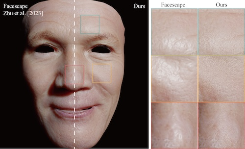
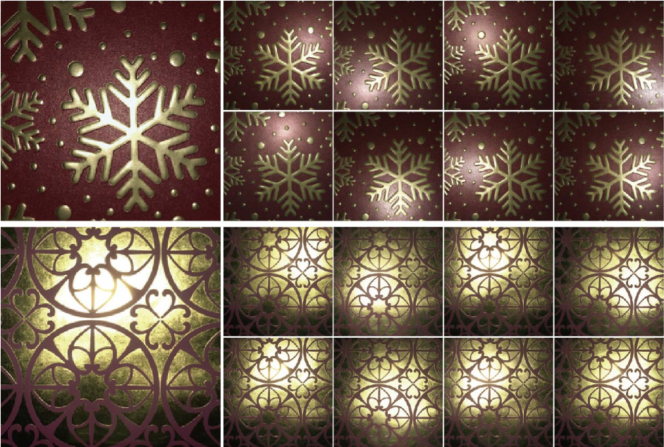

Research
Recent work on recovering, representing, and rendering fine-scale appearance.
This page keeps the publication record concise while linking to the complete
project materials.
Published work
Two conference papers, shown in reverse chronological order.

SIGGRAPH 2025 · Conference Paper
Youyang Du, Lu Wang, Beibei Wang
A differentiable graph-based representation of facial wrinkles and
pores that synthesizes microscopic structures from naturally captured,
potentially blurry face images.

SIGGRAPH Asia 2025 · Conference Paper
Youxin Xing, Zheng Zeng, Youyang Du, Lu Wang, Beibei Wang
Diffusion priors generate coherent observations under varied lighting,
helping multi-image estimators recover highlight-free spatially varying
reflectance from a single material image.
 Skip to content
Skip to content